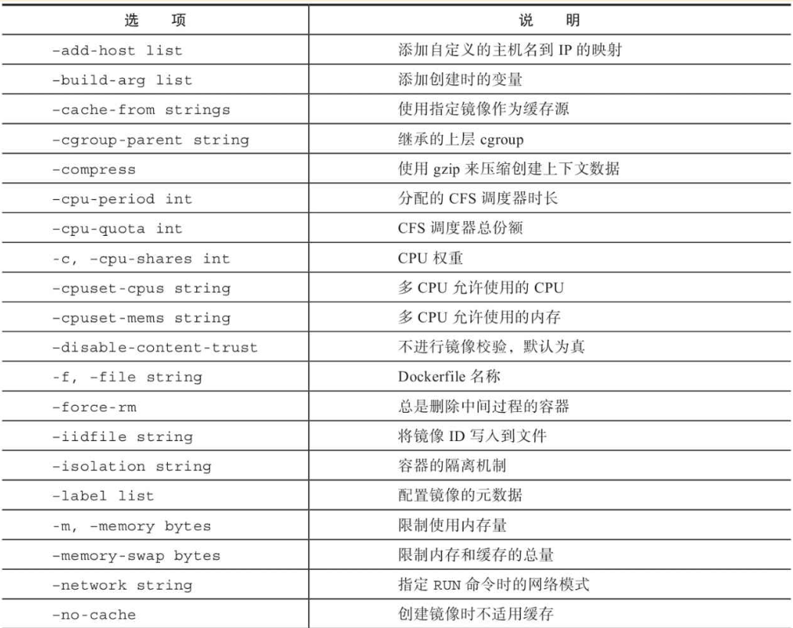
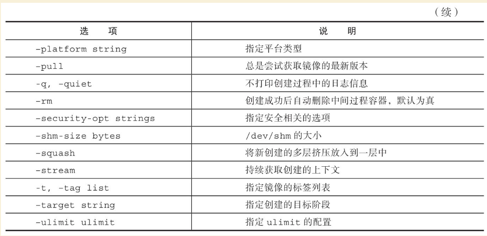
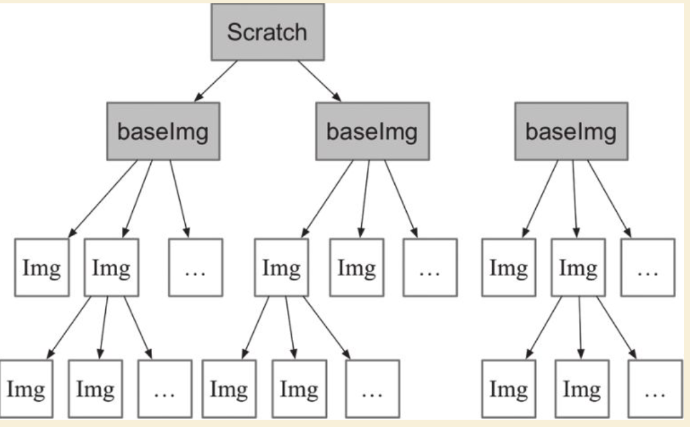

Contents
使用Dockerfile创建镜像¶
Dockerfile是一个文本格式的配置文件，用户可以使用Dockerfile来快速创建自定义的镜像。
1. Dockerfile编写准则¶
下面是Dockerfile编写的一些参考准则：
（1）尽量选择官方镜像。
（2）选择合适的基础镜像。
标签中包含“alpine”的镜像是基于体积更小的Alpine Linux发行版制作的，一般情况下可以优先考虑。
标签中包含“sdk”的镜像是包含完整的框架SDK的，往往体积比较大，如果仅用于运行托管，尽量选择带“runtime”的镜像
（3）优化指令顺序。
可以把WORKDIR、ENV等放在前面，把COPY、ADD放在后面。总的来说，就是把不需要经常更改的指令放到前面，将最频繁更改的指令放到最后面。
（4）只复制需要的文件，切忌复制所有内容。
（5）最小化可缓存的执行层。
比如，每一个RUN指令都会被看作是可缓存的执行单元。太多的RUN指令会增加镜像的层数，增大镜像体积，而将所有的命令都放到同一个RUN指令中又会破坏缓存，从而延缓构建周期。
（6）使用多阶段构建。
（7）根据情况合并指令。前面其实提到过这一点，甚至还特地讲了转义字符，主要就是为此服务的。前面我们讲过，每一个指令都会创建一层，并构成新的镜像
（8）删除多余文件和清理没用的中间结果。
这一点很易于理解，通常来讲，体积更小，部署更快！因此，在构建过程中，我们需要清理那些最终不需要的代码或文件，比如临时文件、源代码、缓存等。
（9）使用.dockerignore。.dockerignore文件用于忽略那些镜像构建时非必需的文件，可以是开发文档、日志和其他无用的文件。
2. Dockerfile编写注意事项¶
华为云上编写高效的Dockerfile说明举例很好，请参考
https://support.huawei.com/carrier/docview!docview?nid=DOC1100716384&topicId=7248a2e6
编写 Dockerfile 的最佳实践
https://docs.docker.com/develop/develop-images/dockerfile_best-practices/
Dockerfile 实践
3. 查看运行容器的Dockerfile工具¶
项目说明：能够查看在运行容器的Dockerfile的工具，有时候我们可能会维护一个没有Dockerfile的容器，即可借助此工具。
相关文章：博文介绍
4. 查看docker容器运行命令的所有参数¶
项目说明：给定一个现有的 docker 容器，打印运行它的副本所需的命令行。
相关文章：README
可以将运行的docker 推导反写为docker-compose文件
5. 基本结构¶
Dockerfile由一行行命令语句组成，并且支持以#开头的注释行。
一般而言，Dockerfile主体内容分为四部分：基础镜像信息、维护者信息、镜像操作指令和容器启动时执行指令。
一个简单的示例：
# escape=\ (backslash)
# This dockerfile uses the ubuntu:xeniel image
# VERSION 2 - EDITION 1
# Author: docker_user
# Command format: Instruction [arguments / command] ..
# Base image to use, this must be set as the first line
FROM ubuntu:xeniel
# Maintainer: docker_user <docker_user at email.com> (@docker_user)
LABEL maintainer docker_user<docker_user@email.com>
# Commands to update the image
RUN echo "deb http://archive.ubuntu.com/ubuntu/ xeniel main universe" >> /etc/
apt/sources.list
RUN apt-get update && apt-get install -y nginx
RUN echo "\ndaemon off;" >> /etc/nginx/nginx.conf
# Commands when creating a new container
CMD /usr/sbin/nginx
下面是Docker Hub上两个热门镜像nginx和Go的Dockerfile的例子，通过这两个例子。读者可以对Dockerfile结构有个基本的感知。
第一个是在debian：jessie基础镜像基础上安装Nginx环境，从而创建一个新的nginx镜像：
FROM debian:jessie
LABEL maintainer docker_user<docker_user@email.com>
ENV NGINX_VERSION 1.10.1-1~jessie
RUN apt-key adv --keyserver hkp://pgp.mit.edu:80 --recv-keys 573BFD6B3D8FBC64107
9A6ABABF5BD827BD9BF62 \
&& echo "deb http://nginx.org/packages/debian/ jessie nginx" >> /etc/apt/sources.list \
&& apt-get update \
&& apt-get install --no-install-recommends --no-install-suggests -y \
ca-certificates \
nginx=${NGINX_VERSION} \
nginx-module-xslt \
nginx-module-geoip \
nginx-module-image-filter \
nginx-module-perl \
nginx-module-njs \
gettext-base \
&& rm -rf /var/lib/apt/lists/*
# forward request and error logs to docker log collector
RUN ln -sf /dev/stdout /var/log/nginx/access.log \
&& ln -sf /dev/stderr /var/log/nginx/error.log
EXPOSE 80 443
CMD ["nginx", "-g", "daemon off;"]
第二个是基于buildpack-deps：jessie-scm基础镜像，安装Golang相关环境，制作一个Go语言的运行环境镜像：
FROM buildpack-deps:jessie-scm
# gcc for cgo
RUN apt-get update && apt-get install -y --no-install-recommends \
g++ \
gcc \
libc6-dev \
make \
&& rm -rf /var/lib/apt/lists/*
ENV GOLANG_VERSION 1.6.3
ENV GOLANG_DOWNLOAD_URL https://golang.org/dl/go$GOLANG_VERSION.linux-amd64.tar.gz
ENV GOLANG_DOWNLOAD_SHA256 cdde5e08530c0579255d6153b08fdb3b8e47caabbe717bc7bcd7561275a87aeb
RUN curl -fsSL "$GOLANG_DOWNLOAD_URL" -o golang.tar.gz \
&& echo "$GOLANG_DOWNLOAD_SHA256 golang.tar.gz" | sha256sum -c - \
&& tar -C /usr/local -xzf golang.tar.gz \
&& rm golang.tar.gz
ENV GOPATH /go
ENV PATH $GOPATH/bin:/usr/local/go/bin:$PATH
RUN mkdir -p "$GOPATH/src" "$GOPATH/bin" && chmod -R 777 "$GOPATH"
WORKDIR $GOPATH
COPY go-wrapper /usr/local/bin/
示例,基于centos7镜像再构建
FROM centos:7
MAINTAINER www.humingzhe.com
RUN yum install -y gcc gcc-c++ make openssl-devel pcre-devel && yum clean all
ADD nginx-1.12.1.tar.gz /tmp
RUN cd /tmp/nginx-1.12.1 && \
./configure --prefix=/usr/local/nginx && \
make -j 2 && \
make install && \
rm -rf /tmp/nginx-1.12.1* && \
cp /usr/share/zoneinfo/Asia/Shanghai /etc/localtime && \
echo 'Asia/Shanghai' >/etc/timezone
COPY nginx.conf /usr/local/nginx/conf
COPY vhost/ /usr/local/nginx/conf
WORKDIR /usr/local/nginx
EXPOSE 80
CMD ["./sbin/nginx", "-g", "daemon off;"]
5.1 拷贝目录的一个坑¶
拷贝文件不需要写目标
# 拷贝文件
FROM centos
COPY 2.txt /usr/local/
拷贝目录则需要这样写,目标,不然拷贝不进去
# 拷贝目录
FROM centos
COPY mysql /usr/local/mysql
6. Dockerfile指令说明¶
Dockerfile中指令的一般格式为INSTRUCTION arguments，包括“配置指令”（配置镜像信息）和“操作指令”（具体执行操作），参见表
Docker Dockerfile
https://www.runoob.com/docker/docker-dockerfile.html
Dockerfile中的指令及说明
指令 |
说明 |
|---|---|
FROM |
指定创建基础镜像 |
MAINTAINER |
指定维护者信息 |
RUN |
运行命令 |
CMD |
指定启动容器时默认执行的命令 |
LABEL |
指定生成镜像的元数据标签信息 |
EXPOSE |
声明镜像内服务所监听的端口 |
ENV |
指定环境变量 |
ADD |
复制指定的src下的内容到容器中的dest |
COPY |
复制本地主机的src路径下的内容到镜像中的dest下 |
ENTRYPOINT |
指定镜像的默认入口 |
VOLUME |
创建数据卷挂载点 |
USER |
指定运行容器时的用户名或UID |
WORKDIR |
配置工作目录 |
ARG |
指定镜像内使用的参数（例如版本号信息等） |
ONBUILD |
当作为其他镜像的基础镜像时，所执行的创建操作指令 |
STOPSIGNAL |
容器退出的信号值 |
HEALTHCHECK |
如何进行健康检查 |
SHELL |
指定使用shell时的默认shell类型 |
6.1 配置指令¶
可参考文献：
Dockerfile、Docker Compose file 参考文档
1.FROM¶
指定所创建镜像的基础镜像。
格式为
FROM<image>[AS<name>]
或
FROM<image>:<tag>[AS<name>]
或
FROM<image>@<digest>[AS<name>]。
任何Dockerfile中第一条指令必须为FROM指令。
并且，如果在同一个Dockerfile中创建多个镜像时，可以使用多个FROM指令（每个镜像一次）。
为了保证镜像精简，可以选用体积较小的镜像如Alpine或Debian作为基础镜像。例如：
ARG VERSION=9.3
FROM debian:${VERSION}
#示例
FROM scratch
.....
2.MAINTAINER¶
指定维护者信息，格式为MAINTAINER<name>。例如：
MAINTAINER image_creator@docker.com
该信息会写入生成镜像的Author属性域中。
3.RUN¶
运行指定命令。
格式为RUN<command>或RUN["executable"，"param1"，"param2"]。注意，后一个指令会被解析为Json数组，因此必须用双引号。
前者默认将在shell终端中运行命令，即/bin/sh-c；后者则使用exec执行，不会启动shell环境。
指定使用其他终端类型可以通过第二种方式实现，例如RUN["/bin/bash"，"-c"，"echo hello"]。
每条RUN指令将在当前镜像基础上执行指定命令，并提交为新的镜像层。当命令较长时可以使用:raw-latex:来换行。例如：
RUN apt-get update \
&& apt-get install -y libsnappy-dev zlib1g-dev libbz2-dev \
&& rm -rf /var/cache/apt \
&& rm -rf /var/lib/apt/lists/*
RUN 作为 Dockerfile 中最为常用的指令，在使用时有以下建议：
在
RUN指令执行过程中，产生的中间镜像会被当做缓存在下一次构建时使用，如果不想使用缓存，使其失效，可以在build时添加--no-cache尽量把所有的
RUN指令写到一起，如果是多条shell命令，可以不用每条命令都添加RUN，更好的做法是通过\换行，通过&&连接多个指令，这样对构建生成的镜像的大小优化是很有帮助的，语法为
RUN set -x && \
yum install -y epel-release \
make \
gcc \
gcc-c++
4.CMD¶
CMD指令用来指定启动容器时默认执行的命令。它支持三种格式：
CMD["executable"，"param1"，"param2"]使用exec执行，是推荐使用的方式；CMD command param1 param2在/bin/sh中执行，提供给需要交互的应用；CMD["param1"，"param2"]提供给ENTRYPOINT的默认参数。
每个Dockerfile只能有一条CMD命令。如果指定了多条命令，只有最后一条会被执行。
如果用户启动容器时手动指定了运行的命令（作为run的参数），则会覆盖掉CMD指定的命令。
示例:
CMD ["c:\\Apache24\\bin\\httpd.exe", "-w"]
CMD c:\\Apache24\\bin\\httpd.exe -w
5.LABEL¶
LABEL指令可以为生成的镜像添加元数据标签信息。这些信息可以用来辅助过滤出特定镜像。
格式为LABEL<key>=<value><key>=<value><key>=<value>…。
例如：
LABEL "com.example.vendor"="ACME Incorporated"
LABEL com.example.label-with-value="foo"
LABEL version="1.0"
LABEL description="This text illustrates \
that label-values can span multiple lines."
在镜像构建后并成功运行容器，可以通过 inspect 查看
# docker image inspect --format='' myimage
{
"com.example.vendor": "ACME Incorporated",
"com.example.label-with-value": "foo",
"version": "1.0",
"description": "This text illustrates that label-values can span multiple lines."
}
如果要声明作者，语法为
LABEL maintainer="SvenDowideit@home.org.au"
6.EXPOSE¶
声明镜像内服务监听的端口。
格式为EXPOSE <port> [<port>/<protocol>...]。
例如：
EXPOSE 22 80 8443
注意该指令只是起到声明作用，并不会自动完成端口映射。
如果要映射端口出来，在启动容器时可以使用-P参数（Docker主机会自动分配一个宿主机的临时端口）或-p HOST_PORT：CONTAINER_PORT参数（具体指定所映射的本地端口）。
7.ENV¶
指定环境变量，在镜像生成过程中会被后续RUN指令使用，在镜像启动的容器中也会存在。
格式为ENV<key><value>或ENV<key>=<value>…。
例如：
ENV PG_MAJOR 9.3
ENV PG_VERSION 9.3.4
RUN curl -SL http://example.com/postgres-$PG_VERSION.tar.xz | tar -xJC /usr/src/
postgress && …
ENV PATH /usr/local/postgres-$PG_MAJOR/bin:$PATH
指令指定的环境变量在运行时可以被覆盖掉，如
docker run--env<key>=<value>built_image。
注意当一条ENV指令中同时为多个环境变量赋值并且值也是从环境变量读取时，会为变量都赋值后再更新。如下面的指令，最终结果为key1=value1 key2=value2：
ENV key1=value2
ENV key1=value1 key2=${key1}
8.ADD¶
该命令将复制指定的<src>路径下的内容到容器中的<dest>路径下。
格式为ADD<src><dest>。
其中<src>可以是Dockerfile所在目录的一个相对路径（文件或目录），也可以是一个URL，还可以是一个tar文件（如果为tar文件，会自动解压到<dest>路径下）。<dest>可以是镜像内的绝对路径，或者相对于工作目录（WORKDIR）的相对路径。
路径支持正则格式，例如：
ADD *.c /code/
9.COPY¶
COPY 和 ADD
都是用于在构建时往镜像中复制文件或目录的，并且两者都支持在复制时修改文件或目录的属主和属组，语法为
ADD [--chown=<user>:<group>] <src>... <dest>
ADD [--chown=<user>:<group>] ["<src>",... "<dest>"]
COPY [--chown=<user>:<group>] <src>... <dest>
COPY [--chown=<user>:<group>] ["<src>",... "<dest>"]
复制内容到镜像。 格式为
COPY <src> <dest>
复制本地主机的（为Dockerfile所在目录的相对路径，文件或目录）下内容到镜像中的。目标路径不存在时，会自动创建。
路径同样支持正则格式。 COPY与ADD指令功能类似，当使用本地目录为源目录时，推荐使用COPY。
两者的使用差不多，但 ADD 功能更丰富
支持URL
例如源路径是文件的
URL链接，构建时自动进行下载，下载后放到目标路径下，文件权限为600压缩包自动解压
例如
tar、gzip、bzip2、xz格式的压缩包，ADD指令将会自动解压缩这个压缩文件到目标路径去
10.ENTRYPOINT¶
指定镜像的默认入口命令，该入口命令会在启动容器时作为根命令执行，所有传入值作为该命令的参数。
支持两种格式：
ENTRYPOINT ["executable", "param1", "param2"]（exec调用执行）；
ENTRYPOINT command param1 param2（shell中执行）。
此时，CMD指令指定值将作为根命令的参数。 每个Dockerfile中只能有一个ENTRYPOINT，当指定多个时，只有最后一个起效。在运行时，可以被–entrypoint参数覆盖掉，如docker run–entrypoint。
11.VOLUME¶
创建一个数据卷挂载点。 格式为VOLUME ["/data"]。
运行容器时可以从本地主机或其他容器挂载数据卷，一般用来存放数据库和需要保持的数据等。
12.USER¶
指定运行容器时的用户名或UID，后续的RUN等指令也会使用指定的用户身份。
格式为USER daemon。
当服务不需要管理员权限时，可以通过该命令指定运行用户，并且可以在Dockerfile中创建所需要的用户。例如：
RUN groupadd -r postgres && useradd --no-log-init -r -g postgres postgres
要临时获取管理员权限可以使用gosu命令。
13.WORKDIR¶
WORKDIR 指令为 Dockerfile 中的任何 RUN 、 CMD 、
ENTRYPOINT 、 COPY 和 ADD
指令设置工作目录。如果工作目录不存在，即使它没有在后续的 Dockerfile
指令中使用，它也会被创建
格式为WORKDIR /path/to/workdir。
WORKDIR 指令可以在 Dockerfile
中使用多次。如果提供了一个相对路径，它将相对于前一个 WORKDIR
指令的路径，语法为
WORKDIR /a
WORKDIR b
WORKDIR c
RUN pwd
则最终路径为/a/b/c。 因此，为了避免出错，推荐WORKDIR指令中只使用绝对路径。
WORKDIR 指令也可以解析之前使用 ENV 设置的环境变量，只能使用在
Dockerfile 中显式设置的环境变量，语法为
ENV DIRPATH=/path
WORKDIR $DIRPATH/$DIRNAME
RUN pwd
这里的最终路径是 /path/$DIRNAME
14.ARG¶
指定一些镜像内使用的参数（例如版本号信息等），这些参数在执行docker
build命令时才以--build-arg<varname>=<value>格式传入。
格式为ARG<name>[=<default value>]。
则可以用docker build--build-arg<name>=<value>.来指定参数值。
15.ONBUILD¶
指定当基于所生成镜像创建子镜像时，自动执行的操作指令。
格式为ONBUILD [INSTRUCTION]。
例如，使用如下的Dockerfile创建父镜像ParentImage，指定ONBUILD指令：
# Dockerfile for ParentImage
[...]
ONBUILD ADD . /app/src
ONBUILD RUN /usr/local/bin/python-build --dir /app/src
[...]
使用docker build命令创建子镜像ChildImage时（FROM ParentImage），会首先执行ParentImage中配置的ONBUILD指令：
# Dockerfile for ChildImage
FROM ParentImage
等价于在ChildImage的Dockerfile中添加了如下指令：
#Automatically run the following when building ChildImage
ADD . /app/src
RUN /usr/local/bin/python-build --dir /app/src
...
由于ONBUILD指令是隐式执行的，推荐在使用它的镜像标签中进行标注，例如ruby：2.1-onbuild。 ONBUILD指令在创建专门用于自动编译、检查等操作的基础镜像时，十分有用。
16.STOPSIGNAL¶
指定所创建镜像启动的容器接收退出的信号值：
STOPSIGNAL signal
17.HEALTHCHECK¶
配置所启动容器如何进行健康检查（如何判断健康与否），自Docker 1.12开始支持。
格式有两种：
·HEALTHCHECK[OPTIONS]CMD command： 根据所执行命令返回值是否为0来判断；
·HEALTHCHECK NONE： 禁止基础镜像中的健康检查。
OPTION支持如下参数：
.--interval=<间隔>：两次健康检查的间隔，默认为 30 秒；
·--timeout=<时长>：健康检查命令运行超时时间，如果超过这个时间，本次健康检查就被视为失败，默认 30 秒；
·--retries=<次数>：当连续失败指定次数后，则将容器状态视为 unhealthy，默认 3 次。
和 CMD, ENTRYPOINT 一样，HEALTHCHECK
只可以出现一次，如果写了多个，只有最后一个生效。
假设我们有个镜像是个最简单的 Web 服务，我们希望增加健康检查来判断其 Web
服务是否在正常工作，我们可以用 curl 来帮助判断，其 Dockerfile 的
HEALTHCHECK 可以这么写：
FROM nginx
RUN apt-get update && apt-get install -y curl && rm -rf /var/lib/apt/lists/*
HEALTHCHECK --interval=5s --timeout=3s \
CMD curl -fs http://localhost/ || exit 1
这里我们设置了每 5
秒检查一次（这里为了试验所以间隔非常短，实际应该相对较长），如果健康检查命令超过
3 秒没响应就视为失败，并且使用 curl -fs http://localhost/ || exit 1
作为健康检查命令。
使用 docker build 来构建这个镜像：
$ docker build -t myweb:v1 .
构建好了后，我们启动一个容器：
$ docker run -d --name web -p 80:80 myweb:v1
当运行该镜像后，可以通过 docker container ls 看到最初的状态为
(health: starting)：
$ docker container lsCONTAINER ID IMAGE COMMAND CREATED STATUS PORTS NAMES03e28eb00bd0 myweb:v1 "nginx -g 'daemon off" 3 seconds ago Up 2 seconds (health: starting) 80/tcp, 443/tcp web
在等待几秒钟后，再次 docker container ls，就会看到健康状态变化为了
(healthy)：
$ docker container ls
CONTAINER ID IMAGE COMMAND CREATED STATUS PORTS NAMES
03e28eb00bd0 myweb:v1 "nginx -g 'daemon off" 18 seconds ago Up 16 seconds (healthy) 80/tcp, 443/tcp web
如果健康检查连续失败超过了重试次数，状态就会变为 (unhealthy)。
为了帮助排障，健康检查命令的输出（包括 stdout 以及
stderr）都会被存储于健康状态里，可以用 docker inspect 来查看
$ docker inspect --format '{{json .State.Health}}' web | python -m json.tool
18.SHELL¶
格式：SHELL ["executable", "parameters"]
SHELL` 指令可以指定 `RUN` `ENTRYPOINT` `CMD` 指令的 shell，Linux 中默认为 `["/bin/sh", "-c"]
指定其他命令使用shell时的默认shell类型：
SHELL ["executable", "parameters"]
默认值为["/bin/sh"，"-c"]。
注意
对于Windows系统，Shell路径中使用了“\”作为分隔符，建议在Dockerfile开头添加#escape='来指定转义符。
两个 RUN 运行同一命令，第二个 RUN
运行的命令会打印出每条命令并当遇到错误时退出。
当 ENTRYPOINT CMD 以 shell 格式指定时，SHELL 指令所指定的
shell 也会成为这两个指令的 shell
SHELL ["/bin/sh", "-cex"]
# /bin/sh -cex "nginx"
ENTRYPOINT nginx
SHELL ["/bin/sh", "-cex"]
# /bin/sh -cex "nginx"
CMD nginx
7.创建镜像¶
编写完成Dockerfile之后，可以通过docker [image] build命令来创建镜像。
基本的格式为docker build [OPTIONS]PATH|URL|-。
该命令将读取指定路径下（包括子目录）的Dockerfile，并将该路径下所有数据作为上下文（Context）发送给Docker服务端。Docker服务端在校验Dockerfile格式通过后，逐条执行其中定义的指令，碰到ADD、COPY和RUN指令会生成一层新的镜像。最终如果创建镜像成功，会返回最终镜像的ID。
如果上下文过大，会导致发送大量数据给服务端，延缓创建过程。因此除非是生成镜像所必需的文件，不然不要放到上下文路径下。如果使用非上下文路径下的Dockerfile，可以通过-f选项来指定其路径。
要指定生成镜像的标签信息，可以通过-t选项。该选项可以重复使用多次为镜像一次添加多个名称。
例如，上下文路径为/tmp/docker_builder/，并且希望生成镜像标签为builder/first_image:1.0.0，可以使用下面的命令：
$ docker build -t builder/first_image:1.0.0 /tmp/docker_builder/
Docker build 命令参考文献：
例如，指定Dockerfile所在路径为/tmp/docker_builder/，并且希望生成镜像标签为build_repo/first_image，可以使用下面的命令：
$ docker build -t build_repo/first_image /tmp/docker_builder/
如果使用非内容路径下的Dockerfile，可以通过-f选项来指定其路径。
要指定生成镜像的标签信息，可以使用-t选项。
7.1 命令选项¶
docker [image] build
命令支持一系列的选项，可以调整创建镜像过程的行为，参见表。
创建镜像的命令选项及说明
 8.使用.dockerignore文件¶
可以通过.dockerignore文件（每一行添加一条匹配模式）来让Docker忽略匹配模式路径下的目录和文件。例如：
# .dockerignore 文件中可以定义忽略模式
*/temp*
*/*/temp*
tmp?
~*
Dockerfile
!README.md
dockerignore文件中模式语法支持Golang风格的路径正则格式：
·“*”表示任意多个字符；
·“？”代表单个字符；
·“！”表示不匹配（即不忽略指定的路径或文件）。
9.写 Dockerfile 的一些技巧¶
9.1 用 python -m pip 而不是 pip¶
# 升级 pip,让 pip install 更安静,--quiet 参数
$ python -m pip install --quiet --upgrade pip
# pip使用国内源
$ python -m pip install --quiet --upgrade pip \
&& pip install -i https://pypi.tuna.tsinghua.edu.cn/simple --no-cache-dir -r requirements.txt
9.2 让 apt-get install 更安静¶
#我们用 -qq 命令，甚至重定向输出到 /dev/null 让它更安静。
$ apt-get -qq update
$ apt-get -qq install -y curl > /dev/null
9.3 让 curl 和 wget 更安静¶
# 首先，如果要下载文件，curl 和 wget 二选一即可。如果用 curl，可以用 --silent 参数。
$ curl -sLO https://storage.googleapis.com/minikube/releases/latest/minikube-linux-amd64
#wget 有 --quiet 参数。
$ wget -q https://storage.googleapis.com/minikube/releases/latest/minikube-linux-amd64
9.4 用axel而不是curl或者wget¶
对于身处国内的开发者，axel 完全可以取代 curl 以及 wget
cho "Install Go compiler ..."
GO_MIRROR_0="http://mirrors.ustc.edu.cn/golang/go1.13.4.linux-amd64.tar.gz"
GO_MIRROR_1="https://dl.google.com/go/go1.13.4.linux-amd64.tar.gz"
axel --quiet --output go.tar.gz $GO_MIRROR_0 $GO_MIRROR_1
9.5 设置容器时间同步¶
#设置容器时间与宿主机时间同步
RUN /bin/cp /usr/share/zoneinfo/Asia/Shanghai /etc/localtime && echo 'Asia/Shanghai' >/etc/timezone
写 Dockerfile 的一些技巧
10. BuildKit¶
简单的说就是：
BuildKit或DOCKER_BUILDKIT=1 特性可以将docker build完成的数据输出到本地
基于BuildKit优化Dockerfile的构建
https://mp.weixin.qq.com/s/OjeQsalkthe-YksIe0HtVg
10.1 安装buildx¶
# Buildx 0.6+
$ docker buildx bake "https://github.com/docker/buildx.git"
$ mkdir -p ~/.docker/cli-plugins
$ mv ./bin/buildx ~/.docker/cli-plugins/docker-buildx
# Docker 19.03+
$ DOCKER_BUILDKIT=1 docker build --platform=local -o . "https://github.com/docker/buildx.git"
$ mkdir -p ~/.docker/cli-plugins
$ mv buildx ~/.docker/cli-plugins/docker-buildx
# Local
$ git clone https://github.com/docker/buildx.git && cd buildx
$ make install
① 第一种方式使用BuildKit特性，设置环境变量
DOCKER_BUILDKIT=1 docker build .
下面的示例Dockerfile使用一个单独的阶段来收集要导出的生成文件：
示例1
FROM
Learn more about the "FROM" Dockerfile command.
golang AS build-stage
RUN go get -u github.com/LK4D4/vndr
FROM scratch AS export-stage
COPY --from=build-stage /go/bin/vndr /
示例2
FROM nodejs:buster-slimv1.0 AS builder
MAINTAINER 1879324764@qq.com
COPY sources.list /etc/apt/sources.list
COPY gitee-ent-web /home/gitee-ent-web
RUN set -eux;\
apt-get update && \
apt-get install -y wget git && \
cd /home/gitee-ent-web && \
yarn install && \
yarn run build-i18n && \
yarn run build-vendor && \
yarn web:prod-ci-runjs
FROM scratch AS export-stage
COPY --from=builder /home/gitee-ent-web/dist ./dist
② 第二种方式使用BuildKit特性
docker buildx build -o out .
下面命令会在当前out目录下生成输出的文件，out如果不存在会自动创建
DOCKER_BUILDKIT=1 docker build -o out .
或者
# 直接使用 docker buildx build 命令构建镜像。
docker buildx build -o out .
10.2 buildx示例¶
一个go编译环境的例子
$ ls
Dockerfile go.mod main.go
$ cat Dockerfile
FROM golang:1.12-alpine as dev
RUN apk add --no-cache git ca-certificates
RUN adduser -D appuser
WORKDIR /src
COPY . /src/
CMD CGO_ENABLED=0 go build -o app . && ./app
FROM dev as build
RUN CGO_ENABLED=0 go build -o app .
USER appuser
CMD [ "./app" ]
FROM scratch as release
COPY --from=build /etc/passwd /etc/group /etc/
COPY --from=build /src/app /app
USER appuser
CMD [ "/app" ]
FROM scratch as artifact
COPY --from=build /src/app /app
FROM release
$ DOCKER_BUILDKIT=1 docker build --target artifact --output type=local,dest=. .
或者
$ docker buildx build --output type=local,dest=path/to/output-dir
After the build was complete the app binary was exported:
$ ls
Dockerfile app go.mod main.go
$ ./app
Ready to receive requests on port 8080
参考文献
11. 选择父镜像¶
大部分情况下，生成新的镜像都需要通过FROM指令来指定父镜像。父镜像是生成镜像的基础，会直接影响到所生成镜像的大小和功能。
用户可以选择两种镜像作为父镜像，一种是所谓的基础镜像（baseimage），另外一种是普通的镜像（往往由第三方创建，基于基础镜像）。
基础镜像比较特殊，其Dockerfile中往往不存在FROM指令，或者基于scratch镜像（FROM scratch），这意味着其在整个镜像树中处于根的位置。
下面的Dockerfile定义了一个简单的基础镜像，将用户提前编译好的二进制可执行文件binary复制到镜像中，运行容器时执行binary命令：
FROM scratch
ADD binary /
CMD ["/binary"]
普通镜像也可以作为父镜像来使用，包括常见的busybox、debian、ubuntu等。
Docker不同类型镜像之间的继承关系如图
镜像的继承关系
11.1 多步骤-示例¶
自17.05版本开始，Docker支持多步骤镜像创建（Multi-stage build）特性，可以精简最终生成的镜像大小。
对于需要编译的应用（如C、Go或Java语言等）来说，通常情况下至少需要准备两个环境的Docker镜像：
·编译环境镜像：包括完整的编译引擎、依赖库等，往往比较庞大。作用是编译应用为二进制文件；
·运行环境镜像：利用编译好的二进制文件，运行应用，由于不需要编译环境，体积比较小。
使用多步骤创建，可以在保证最终生成的运行环境镜像保持精简的情况下，使用单一的Dockerfile，降低维护复杂度。
以Go语言应用为例。创建干净目录，进入到目录中，创建main.go文件，内容为：
// main.go will output "Hello, Docker"
package main
import (
"fmt"
)
func main() {
fmt.Println("Hello, Docker")
}
创建Dockerfile，使用golang：1.9镜像编译应用二进制文件为app，使用精简的镜像alpine：latest作为运行环境。Dockerfile完整内容为：
FROM golang:1.9 as builder # define stage name as builder
RUN mkdir -p /go/src/test
WORKDIR /go/src/test
COPY main.go .
RUN CGO_ENABLED=0 GOOS=linux go build -o app .
FROM alpine:latest
RUN apk --no-cache add ca-certificates
WORKDIR /root/
COPY --from=builder /go/src/test/app . # copy file from the builder stage
CMD ["./app"]
执行如下命令创建镜像，并运行应用：
$ docker build -t yeasy/test-multistage:latest .
Sending build context to Docker daemon 3.072kB
Step 1/10 : FROM golang:1.9
...
Successfully built 5fd0cb93dda0
Successfully tagged yeasy/test-multistage:latest
$ docker run --rm yeasy/test-multistage:latest
Hello, Docker
查看生成的最终镜像，大小只有6.55 MB：
$ docker images|grep test-multistage
yeasy/test-multistage latest 0f21ba20dc58 About a minute ago 8.02MB
12.Dockerfile-示例¶
12.1 示例1¶
FROM centos:7.1.1503 #表示此镜像以centos:7.1.1503为基础镜像
RUN mkdir -p /usr/local/mongodb/data \ #创建文件夹，存放数据和依赖文件，建议多个命令写成一条，可减少镜像大小
&& mkdir -p /usr/local/mongodb/bin \
&& mkdir -p /root/apache-tomcat-7.0.82 \
&& mkdir -p /root/jdk1.8.0_151
COPY ./apache-tomcat-7.0.82 /root/apache-tomcat-7.0.82 #将apache-tomcat-7.0.82目录下的文件拷贝到容器目录下
COPY ./jdk1.8.0_151 /root/jdk1.8.0_151 #将jdk1.8.0_151目录下的文件拷贝到容器目录下
COPY ./start_tomcat_and_mongo.sh /root/ #将start_tomcat_and_mongo.sh拷贝到容器/root/目录下
RUN chown root:root -R /root \
&& echo "JAVA_HOME=/root/jdk1.8.0_151 " >> /etc/profile \ #注入JAVA环境变量
&& echo "PATH=\$JAVA_HOME/bin:$PATH " >> /etc/profile \
&& echo "CLASSPATH=.:\$JAVA_HOME/lib/dt.jar:\$JAVA_HOME/lib/tools.jar" >> /etc/profile \
&& chmod +x /root \
&& chmod +x /root/start_tomcat_and_mongo.sh
ENTRYPOINT ["/root/start_tomcat_and_mongo.sh"] #容器启动的时候会自动运行start_tomcat_and_mongo.sh里面的命令，可以一条可以多条，也可以是一个脚本
12.2 示例2¶
FROM ubuntu:18.04
ARG TF_PKG=tensorflow-cpu==1.15.0
ARG HOST_ASCEND_BASE=/usr/local/Ascend
ARG NNAE_PATH=/usr/local/Ascend/nnae/latest
ARG TF_PLUGIN_PATH=/usr/local/Ascend/tfplugin/latest
ARG INSTALL_ASCEND_PKGS_SH=install_ascend_pkgs.sh
ARG PREBUILD_SH=prebuild.sh
ARG POSTBUILD_SH=postbuild.sh
WORKDIR /tmp
COPY . ./
# 触发prebuild.sh
RUN bash -c "test -f $PREBUILD_SH && bash $PREBUILD_SH || true"
ENV http_proxy http://xxx.xxx.xxx.xxx:xxx
ENV https_proxy http://xxx.xxx.xxx.xxx:xxx
# 系统包
RUN apt update && \
apt install --no-install-recommends \
python3.7 python3.7-dev \
curl g++ pkg-config unzip \
libblas3 liblapack3 liblapack-dev \
libblas-dev gfortran libhdf5-dev \
libffi-dev libicu60 libxml2 -y
# 配置python pip源
RUN mkdir -p ~/.pip \
&& echo '[global] \n\
index-url=https://pypi.doubanio.com/simple/\n\
trusted-host=pypi.doubanio.com' >> ~/.pip/pip.conf
# pip3.7
RUN curl -k https://bootstrap.pypa.io/get-pip.py -o get-pip.py && \
cd /tmp && \
apt-get download python3-distutils && \
dpkg-deb -x python3-distutils_*.deb / && \
rm python3-distutils_*.deb && \
cd - && \
python3.7 get-pip.py && \
rm get-pip.py
# HwHiAiUser, hwMindX
RUN useradd -d /home/hwMindX -u 9000 -m -s /bin/bash hwMindX && \
useradd -d /home/HwHiAiUser -u 1000 -m -s /bin/bash HwHiAiUser && \
usermod -a -G HwHiAiUser hwMindX
# python包
RUN pip3.7 install numpy && \
pip3.7 install decorator && \
pip3.7 install sympy==1.4 && \
pip3.7 install cffi==1.12.3 && \
pip3.7 install pyyaml && \
pip3.7 install pathlib2 && \
pip3.7 install grpcio && \
pip3.7 install grpcio-tools && \
pip3.7 install protobuf && \
pip3.7 install scipy && \
pip3.7 install requests
# Ascend包
RUN bash $INSTALL_ASCEND_PKGS_SH
# TF安装
ENV LD_LIBRARY_PATH=\
/usr/lib/x86_64-linux-gnu/hdf5/serial:\
$HOST_ASCEND_BASE/add-ons:\
$NNAE_PATH/fwkacllib/lib64:\
$HOST_ASCEND_BASE/driver/lib64/common:\
$HOST_ASCEND_BASE/driver/lib64/driver:$LD_LIBRARY_PATH
RUN pip3.7 install $TF_PKG
# 环境变量
ENV GLOG_v=2
ENV TBE_IMPL_PATH=$NNAE_PATH/opp/op_impl/built-in/ai_core/tbe
ENV TF_PLUGIN_PKG=$TF_PLUGIN_PATH/tfplugin/python/site-packages
ENV FWK_PYTHON_PATH=$NNAE_PATH/fwkacllib/python/site-packages
ENV PATH=$NNAE_PATH/fwkacllib/ccec_compiler/bin:$PATH
ENV ASCEND_OPP_PATH=$NNAE_PATH/opp
ENV PYTHONPATH=\
$FWK_PYTHON_PATH:\
$FWK_PYTHON_PATH/auto_tune.egg:\
$FWK_PYTHON_PATH/schedule_search.egg:\
$TF_PLUGIN_PKG:\
$TBE_IMPL_PATH:\
$PYTHONPATH
ENV http_proxy ""
ENV https_proxy ""
# 触发postbuild.sh
RUN bash -c "test -f $POSTBUILD_SH && bash $POSTBUILD_SH || true" && \
rm $POSTBUILD_SH
12.3 示例3¶
安装tomcat docker
FROM openjdk:11-jre
ENV PATH /usr/local/tomee/bin:$PATH
RUN mkdir -p /usr/local/tomee
WORKDIR /usr/local/tomee
COPY apache-tomee-8.0.1-plus.tar.gz /usr/local/tomee
ENV TOMEE_VER 8.0.1
ENV TOMEE_BUILD plus
RUN set -x \
&& tar -zxf apache-tomee-8.0.1-plus.tar.gz \
&& mv apache-tomee-${TOMEE_BUILD}-${TOMEE_VER}/* /usr/local/tomee \
&& rm -Rf apache-tomee-${TOMEE_BUILD}-${TOMEE_VER} \
&& rm bin/*.bat \
&& rm apache-tomee-8.0.1-plus.tar.gz*
# && useradd -g root tomee \
# && chown -R tomee:root /usr/local/tomee \
# && chmod -R g=u /usr/local/tomee
#USER tomee
EXPOSE 8080
CMD ["catalina.sh", "run"]
更多参考案例
https://support.huaweicloud.com/usermanual-mindxdl202/atlasmindx_02_0060.html
13. 编写Dockerfile经验总结¶
笔者在应用过程中，也总结了一些实践经验。建议读者在生成镜像过程中，尝试从如下角度进行思考，完善所生成镜像：
- 精简镜像用途：尽量让每个镜像的用途都比较集中单一，避免构造大而复杂、多功能的镜像；
- 选用合适的基础镜像：容器的核心是应用。选择过大的父镜像（如Ubuntu系统镜像）会造成最终生成应用镜像的臃肿，推荐选用瘦身过的应用镜像（如node：slim），或者较为小巧的系统镜像（如alpine、busybox或debian）；
- 提供注释和维护者信息：Dockerfile也是一种代码，需要考虑方便后续的扩展和他人的使用；
- 正确使用版本号：使用明确的版本号信息，如1.0，2.0，而非依赖于默认的latest。通过版本号可以避免环境不一致导致的问题；
- 减少镜像层数：如果希望所生成镜像的层数尽量少，则要尽量合并RUN、ADD和COPY指令。通常情况下，多个RUN指令可以合并为一条RUN指令；
- 恰当使用多步骤创建（17.05+版本支持）：通过多步骤创建，可以将编译和运行等过程分开，保证最终生成的镜像只包括运行应用所需要的最小化环境。当然，用户也可以通过分别构造编译镜像和运行镜像来达到类似的结果，但这种方式需要维护多个Dockerfile。
- 使用.dockerignore文件：使用它可以标记在执行docker build时忽略的路径和文件，避免发送不必要的数据内容，从而加快整个镜像创建过程。
- 及时删除临时文件和缓存文件：特别是在执行apt-get指令后，/var/cache/apt下面会缓存了一些安装包；
- 提高生成速度：如合理使用cache，减少内容目录下的文件，或使用.dockerignore文件指定等；
- 调整合理的指令顺序：在开启cache的情况下，内容不变的指令尽量放在前面，这样可以尽量复用；
- 减少外部源的干扰：如果确实要从外部引入数据，需要指定持久的地址，并带版本信息等，让他人可以复用而不出错。
14.常用的Dockerfile工程¶
参考docker-library
https://github.com/docker-library?page=1
https://github.com/orgs/docker-library/repositories
常用Dockerfile例子
https://gitee.com/gaork/dockerfiles/blob/master/centos-base/docker_files/Dockerfile